INNAVERO My Skills
ALLOI XTUS Guwe

Saya Alloi Xtus Innavero biasa dipanggil dengan nama “Xtus” keahlian saya di bidang Editing Video, Motion Graphic, dan Redraw di Ibis Paint untuk kebutuhan editing. Saya memiliki sedikit keahlian prompting dalam vibe-coding yang juga digunakan untuk menunjang efisiensi waktu dalam proses Editing Video, VFX, dan Motion Graphic. Saya juga bisa membuat 3D model low poly object, yang biasa digunakan untuk membuat Music Video dan Motion Graphic. Untuk Realtime software atau Broadcasting saya ahli dalam menggunakan OBS Studio yang biasa dibarengi dengan motion graphic atau flyer yang sudah di buat sebelumnya pada software editing. Software yang biasa saya gunakan adalah Adobe After Effects, Adobe Illustrator, Adobe Photoshop, Figma, Blender 3D, Open Broadcaster Software (OBS), dan sebagian adalah software android apabila membutuhkan flexibilitas seperti Alight Motion, dan Ibis Paint
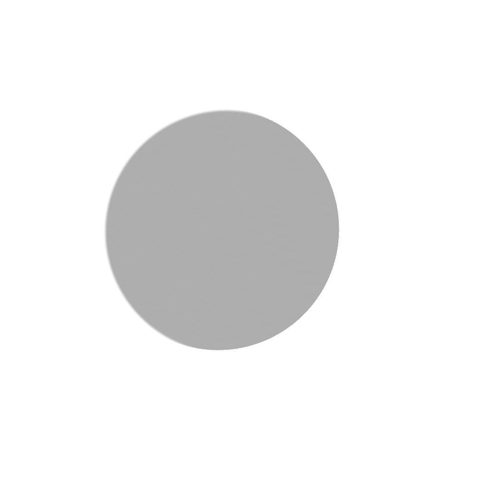
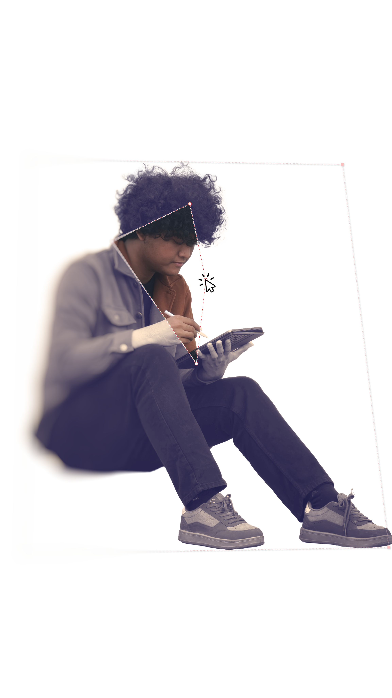
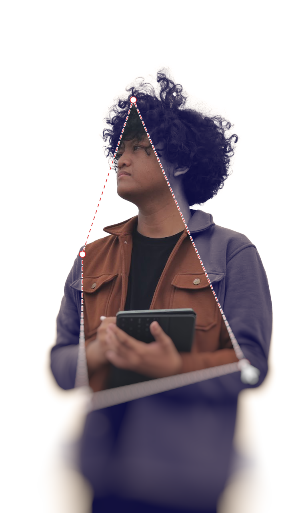
Video Editing, Motion Graphics, VFX, dan
3D Low-Poly Modeling.
Live Broadcasting (OBS Studio), Redraw Digital, dan AI Prompting
(Vibe-coding) untuk efisiensi workflow.
Adobe Suite (After Effects, Illustrator, Photoshop),
Figma, Blender 3D, OBS, Alight Motion, dan Ibis Paint.
 Xtwosketch
Xtwosketch
 Xtuz.inn
Xtuz.inn


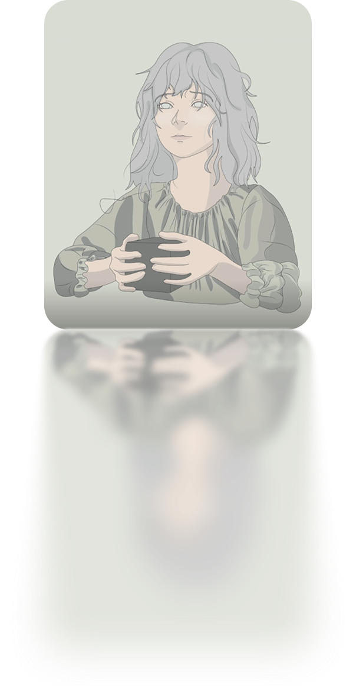
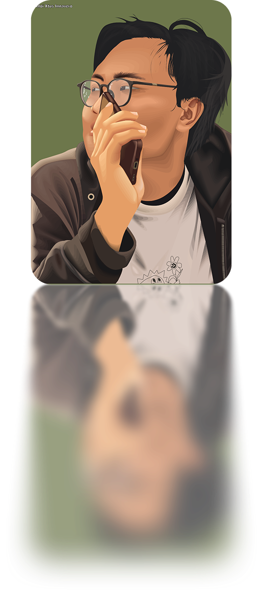
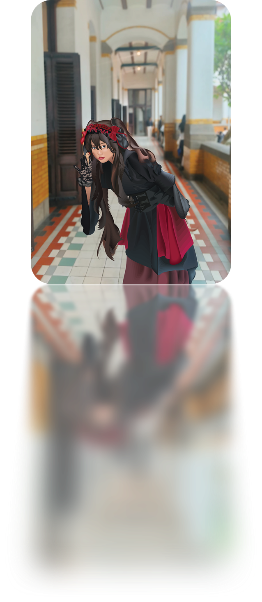
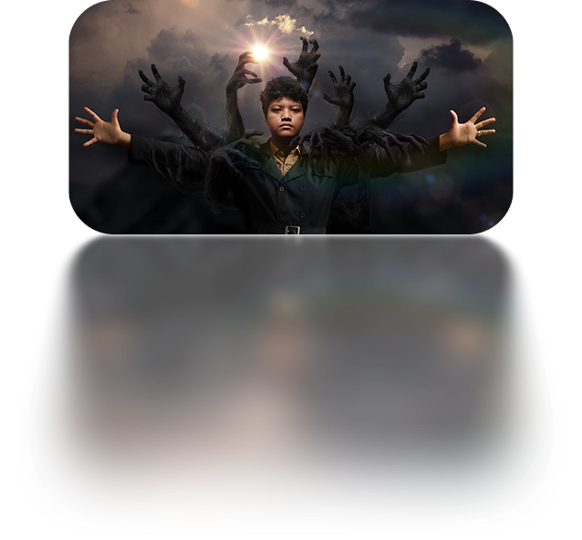
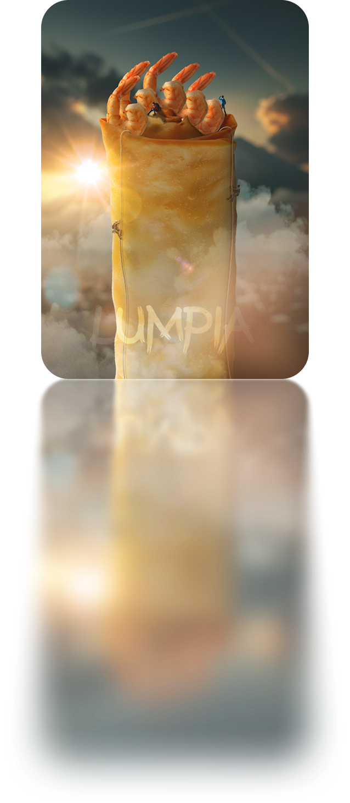
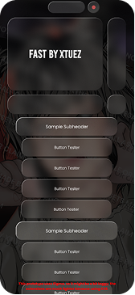
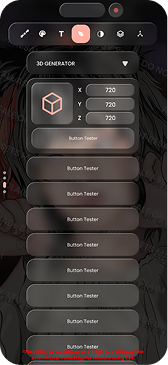
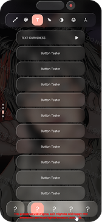
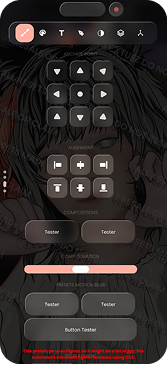
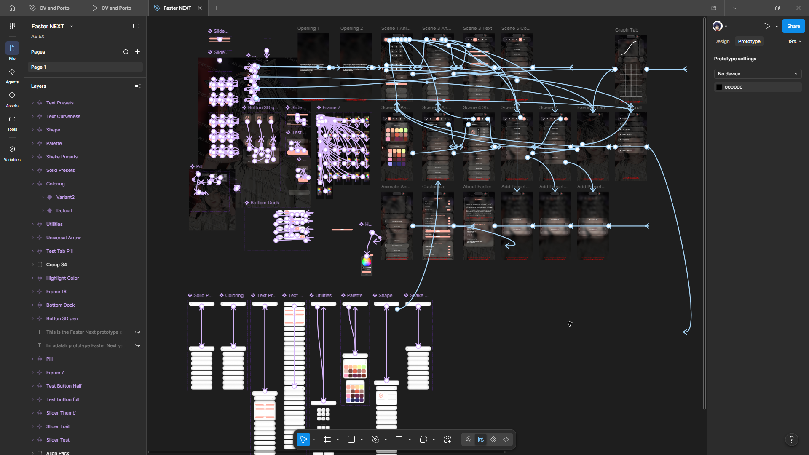
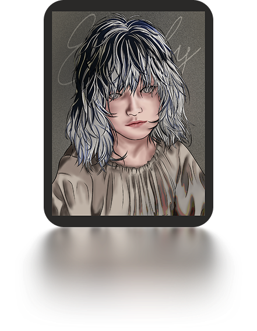
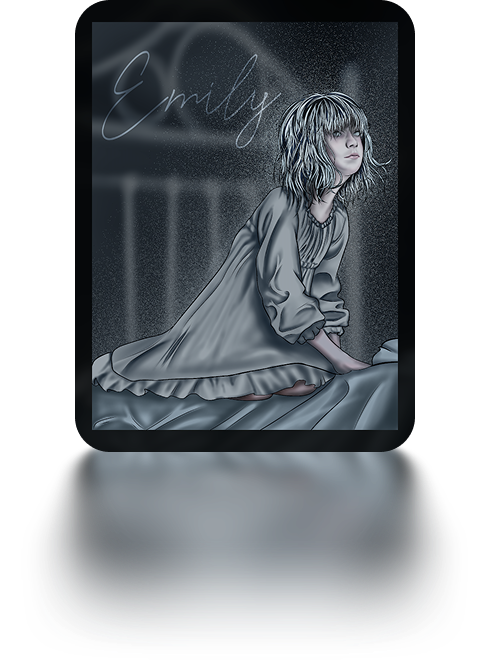
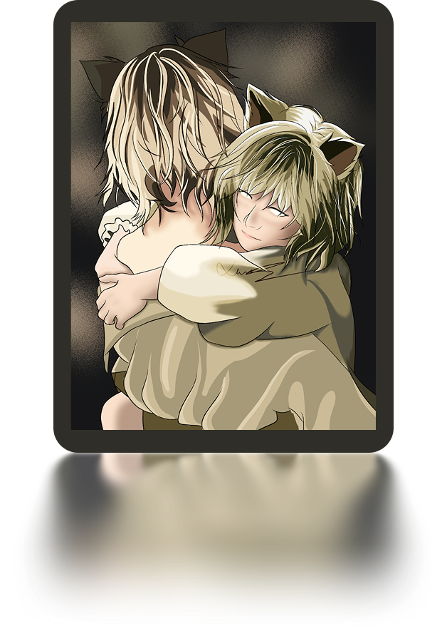
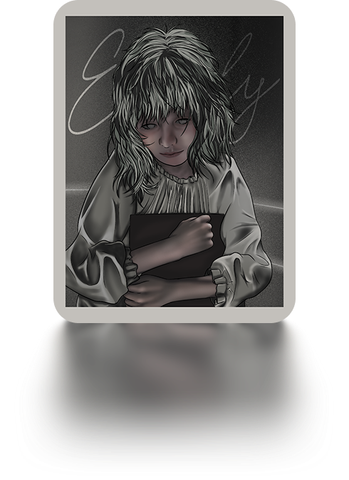
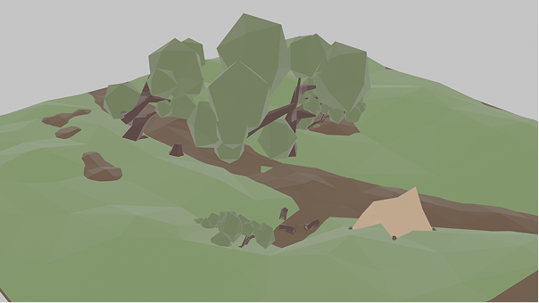
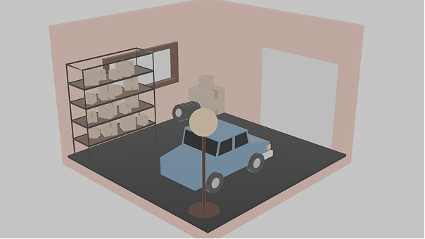
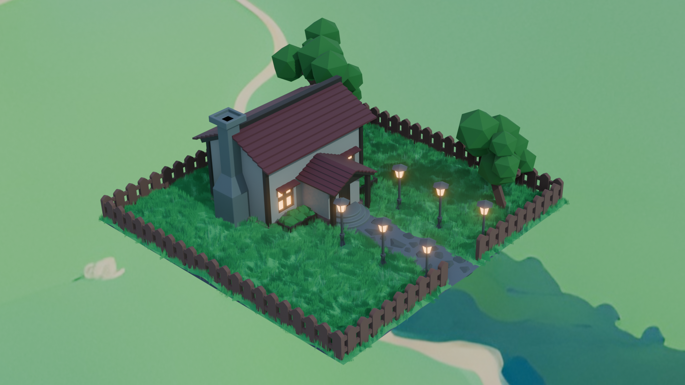
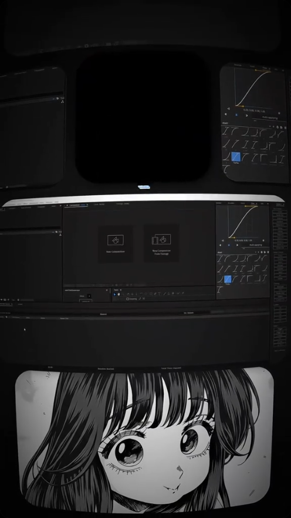
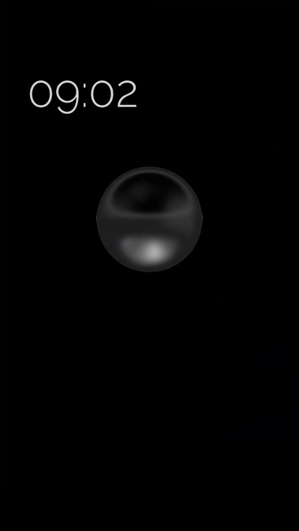